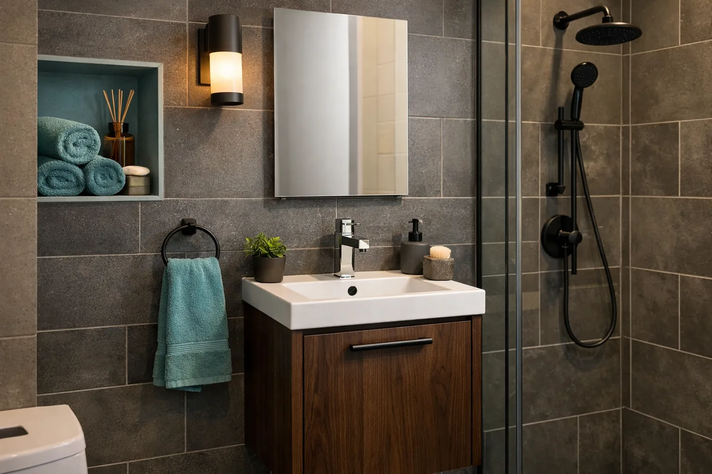
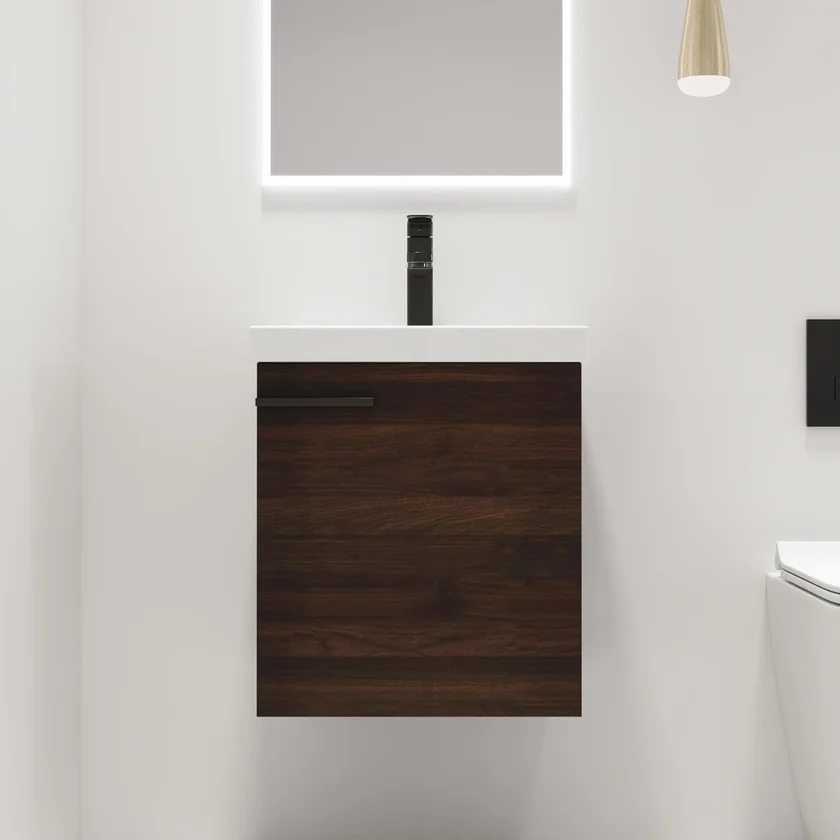
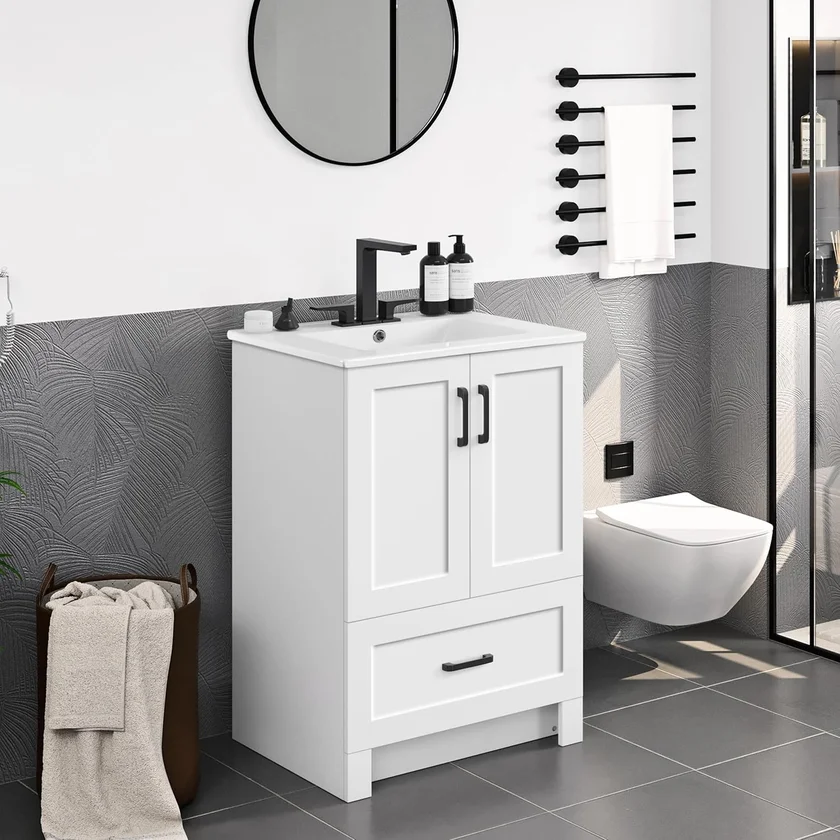
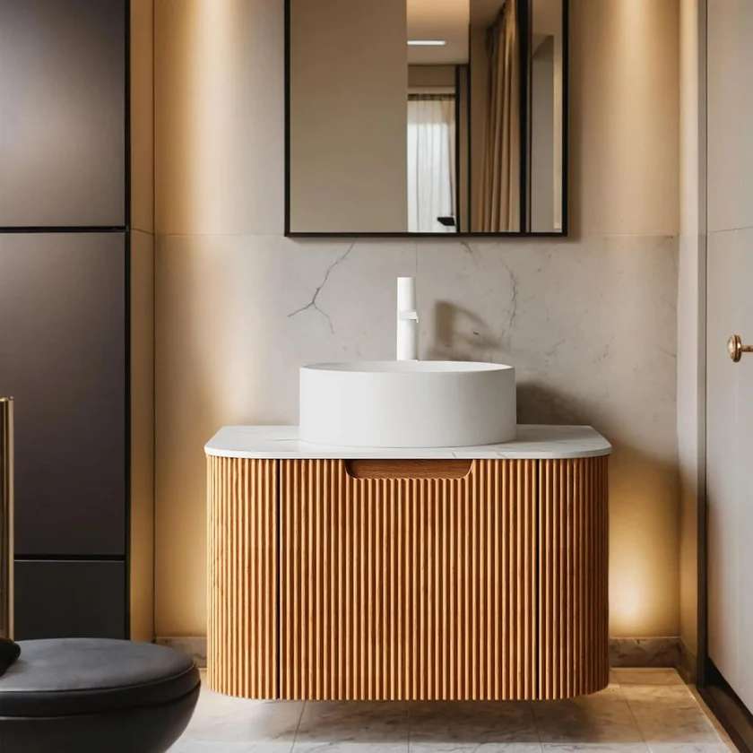
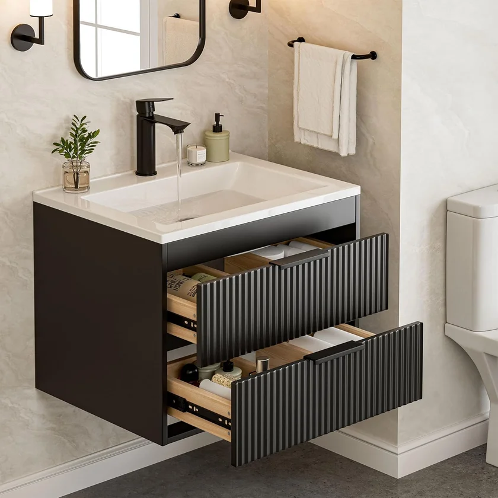
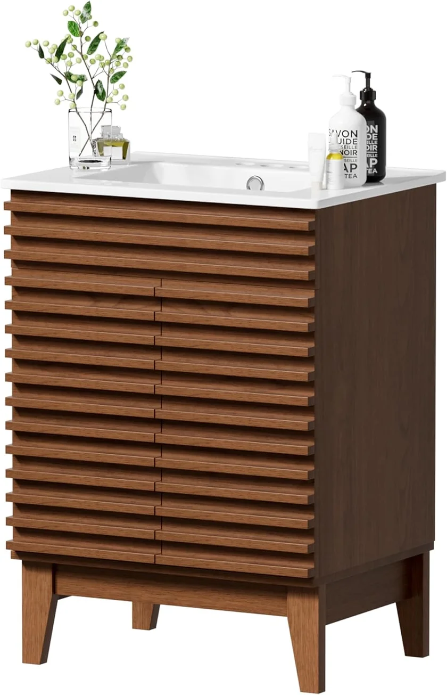

Best Small Bathroom Vanity 18-20 Inch: Top 5 Compact Picks (2026)

Home & Bathroom Expert — Ilane reviews bathroom products with a focus on quality, durability, and real-world performance.

When your bathroom measures barely 4 feet wide, a standard 24-inch vanity feels like trying to park an SUV in a motorcycle spot. That is precisely where 18-20 inch bathroom vanities come in — purpose-built for powder rooms, half baths, and those impossibly narrow spaces that still deserve a functional, attractive vanity.
This guide is different from our broader best small bathroom vanities roundup, which covers the full 18-to-30-inch range. Here, we zero in on the ultra-compact 18-20 inch niche — the smallest vanities that exist — and explain exactly when you need one versus a standard "small" vanity. We also include a few carefully selected 24-inch alternatives for readers whose space can accommodate the extra 4-6 inches, because the jump from 18 to 24 inches unlocks significantly more storage and counter space.
Quick Answer
The Malwee 18 Inch Floating Bathroom Vanity
 is our top pick for ultra-compact spaces. At just 18 inches wide, it mounts to the wall to maximize floor space, includes an integrated ceramic sink, and earns a 4.8-star rating from 114 buyers. At $228, it delivers exceptional value for a true 18-inch vanity with complete sink setup.
is our top pick for ultra-compact spaces. At just 18 inches wide, it mounts to the wall to maximize floor space, includes an integrated ceramic sink, and earns a 4.8-star rating from 114 buyers. At $228, it delivers exceptional value for a true 18-inch vanity with complete sink setup.

Malwee 18 Inch Floating Vanity
Wall-mounted 18-inch vanity with integrated ceramic sink, soft-close cabinet door, and clean modern design. The smallest full-function vanity we tested.
Check Price on AmazonTable of Contents
Why Choose an 18-20 Inch Vanity?
Most "small bathroom vanity" guides start at 24 inches and go up from there. But what if 24 inches is still too wide? Plenty of homeowners face this exact problem, and the reasons are more common than you might think.
Common Scenarios Where 18-20 Inches Is the Only Option
- Powder rooms under 20 square feet — Half baths tucked under staircases or carved out of hallway closets often have less than 28 inches of wall space for a vanity. Factor in trim and clearance, and 18 inches becomes the maximum width.
- Narrow hallway half baths — In many older homes and condos, half baths were added as afterthoughts in narrow corridors. The door swing alone can eliminate a 24-inch option.
- RVs and tiny homes — Mobile and compact living spaces need the absolute smallest vanity footprint possible.
- Secondary sink stations — Adding a second vanity in a corner of the bedroom or laundry room requires minimal space.
- ADA compliance in tight layouts — Meeting the 30-inch minimum clear floor space requirement in front of a vanity sometimes means the vanity itself must shrink to 18-20 inches.
The ultra-compact vanity market has improved dramatically in the past two years. Where 18-inch vanities used to mean cheap pedestal sinks with no storage, today you can find wall-mounted floating models with soft-close cabinets, integrated ceramic basins, and modern finishes that rival their larger counterparts.
18-Inch vs. 24-Inch Vanity: Key Differences
Understanding the practical differences between an 18-inch and a 24-inch vanity is essential before you commit. Those 6 inches affect far more than just width. This section helps you determine whether you truly need the ultra-compact size, or whether you can accommodate a 24-inch model for better functionality.
| Feature | 18-Inch Vanity | 24-Inch Vanity |
|---|---|---|
| Counter Space | Minimal — fits soap and one small item | Room for soap, toothbrush holder, and small tray |
| Sink Basin Size | 12-14 inches wide (hand-wash only) | 16-18 inches wide (comfortable face washing) |
| Storage | 1 small cabinet or shelf | 1-2 drawers + cabinet space |
| Mount Type | Almost always wall-mounted | Wall-mounted or freestanding options |
| Price Range | $150 – $350 | $130 – $500+ |
| Min. Wall Space Needed | 22-24 inches | 28-30 inches |
| Best For | Powder rooms, half baths, RVs | Small full baths, guest baths |
If you have the space for 24 inches, our small bathroom vanities guide covers the best options in that broader range. For readers with larger spaces considering a single vs. double sink setup, the equation is entirely different — you will need at least 48 inches for a double.
Top 5 Ultra-Compact Vanity Picks
Our top pick is a true 18-inch vanity — the smallest standard size available. The remaining four are compact 24-inch models included as "also consider" alternatives, because the jump from 18 to 24 inches is worth it if your space allows. Each was evaluated on build quality, storage efficiency, sink functionality, ease of installation, and real customer feedback.
1. Malwee 18 Inch Floating Bathroom Vanity with Sink
- True 18-inch width — the smallest standard vanity size
- Wall-mounted floating design frees up floor space
- Integrated ceramic sink with overflow drain included
- Soft-close cabinet door with adjustable shelf inside
- Complete hardware and mounting bracket included
Pros
- Genuinely compact 18-inch footprint
- Excellent 4.8-star rating from verified buyers
- Clean, modern aesthetic that looks premium
- All-in-one setup (cabinet + sink + faucet hole)
- Soft-close mechanism prevents slamming
Cons
- Very limited counter space beside the sink
- Requires mounting into wall studs (not suitable for tile-only walls without backing)
- Single cabinet compartment — no drawers
The Malwee is the clear winner for anyone who genuinely needs an 18-inch vanity. It packs a surprising amount of functionality into its compact frame, and the 4.8-star average across 114 reviews confirms it delivers on its promises. The integrated ceramic basin is well-proportioned for the size — you can comfortably wash your hands without splashing water everywhere, which is more than some budget 18-inch pedestal sinks can claim. The cabinet behind the soft-close door fits cleaning supplies, extra soap, and a few rolled hand towels. It is not a lot of storage, but it is infinitely better than a pedestal sink with zero storage. If you are working with a genuine 18-inch constraint, this is the vanity to buy.

2. Yaheetech 24.5 Inch Modern Bathroom Vanity
- 24.5-inch freestanding design with ceramic undermount basin
- Two soft-close doors with adjustable interior shelf
- Durable MDF construction with moisture-resistant finish
- Pre-drilled faucet hole for single-hole faucet
- Most affordable option under $150 with ceramic sink included
Pros
- Unbeatable price under $150
- 252 reviews prove long-term reliability
- Freestanding — no wall-mounting required
- Clean modern look in white finish
Cons
- 24.5 inches — won't fit true 18-20 inch spaces
- MDF is less durable than solid wood in wet environments
- No drawers for organized small-item storage

If you measured your space and found you actually have 28-30 inches of wall room, the Yaheetech is the smartest budget pick you can make. At just $149.99, it costs less than the 18-inch Malwee while giving you 36% more width. The 252-review count is reassuring — this is a product that has been tested by hundreds of real buyers over time. It is a freestanding unit, which means zero wall-mounting hassle. The two soft-close doors and adjustable shelf give you more storage than any 18-inch vanity can offer. The tradeoff is purely about width: if your space cannot accommodate 24.5 inches, this one is out. But if it can, you would be leaving money on the table by buying something more expensive. For a broader comparison of options at this price point, see our best vanities under $500 guide.

3. AmbroVania 24-Inch Modern Floating Bathroom Vanity
- 24-inch wall-mounted floating design with ultra-thin ceramic basin
- Marble-look countertop with integrated overflow sink
- Two spacious drawers with soft-close mechanism
- High-end finish with European-style hardware
- Includes all mounting hardware and detailed instructions
Pros
- Premium look and feel that elevates any bathroom
- Two full drawers — best storage in this size
- 4.7-star rating indicates excellent quality
- Floating design pairs well with modern decor
Cons
- Highest price on this list at $484
- 24 inches — won't fit true 18-inch spaces
- Wall mounting requires stud access

The AmbroVania occupies the premium end of the compact vanity spectrum. At $484, it costs more than double the Yaheetech, but the difference is immediately visible. The marble-look countertop with ultra-thin integrated basin gives it a designer aesthetic that you normally only see in vanities costing $800 or more. The two soft-close drawers provide organized storage that no 18-inch vanity can match. If you are renovating a guest bathroom or a small modern bathroom and your space can handle 24 inches, this is the vanity that will make visitors ask where you bought it. The 4.7-star rating from 96 buyers confirms it delivers on its premium promise.

4. SUNTAGE 24 Inches Modern Floating Vanity
- 24-inch wall-mounted MDF construction with white finish
- Double drawers with soft-close for organized storage
- Integrated ceramic sink with overflow protection
- Modern minimalist design that fits contemporary bathrooms
- Budget-friendly floating option under $220
Pros
- Affordable floating vanity under $220
- Two drawers for better organization than single-door options
- Clean, simple design works in most decor styles
- Includes sink — no separate purchase needed
Cons
- 4.1-star rating is lower than competitors
- MDF may not be as moisture-resistant as solid wood
- Some reviewers report drawer alignment issues

The SUNTAGE hits an interesting middle ground: it is a floating vanity priced like a budget freestanding unit. At $216, it is only $12 less than the 18-inch Malwee, but you get 24 inches of width and double drawers instead of a single cabinet door. The 4.1-star rating is the lowest on this list, and some reviewers mention drawer alignment issues out of the box. That said, most alignment problems are fixable during installation by carefully following the leveling instructions. If you want the visual benefits of a floating vanity (exposed floor, easy cleaning, adjustable height) without paying AmbroVania prices, the SUNTAGE is a solid compromise. Just make sure your wall studs are accessible — this unit needs proper mounting support.

5. APRILSOUL 24 Inch Mid-Century Bathroom Vanity
- 24-inch freestanding design with walnut wood finish
- Mid-century modern tapered legs and clean lines
- Ceramic basin sink included with pre-drilled faucet hole
- Spacious interior cabinet with adjustable shelf
- Warm walnut tone adds character to neutral bathrooms
Pros
- Stunning mid-century design stands out from generic white vanities
- Walnut finish adds warmth and character
- Freestanding — no wall mounting required
- Well-proportioned for 24-inch footprint
Cons
- Only 8 reviews — limited long-term reliability data
- Walnut finish may not suit all bathroom color schemes
- No drawers, only cabinet storage

If your small bathroom is also your design statement, the APRILSOUL breaks away from the sea of white MDF boxes. The walnut wood finish and tapered mid-century legs give it the kind of character that makes a powder room feel intentional rather than an afterthought. At $280, it sits in the mid-range of our picks, offering better design appeal than the Yaheetech and SUNTAGE at a fraction of the AmbroVania's price. The low review count (8 at time of writing) is the main concern — there simply is not enough long-term data to confirm durability. However, the 4.4-star average and the quality visible in the product images are encouraging. If you are after the farmhouse or rustic aesthetic, this warm-toned vanity is the closest match on our list.
Side-by-Side Comparison Table
Here is a direct comparison of all five picks, organized by the factors that matter most when shopping for an ultra-compact vanity. Use this table to quickly narrow down your choice based on your space constraints and priorities.
| Vanity | Width | Type | Price | Rating | Storage |
|---|---|---|---|---|---|
| Malwee | 18" | Floating | $228 | 4.8 (114) | 1 cabinet |
| Yaheetech | 24.5" | Freestanding | $150 | 4.4 (252) | 2 doors + shelf |
| AmbroVania | 24" | Floating | $484 | 4.7 (96) | 2 drawers |
| SUNTAGE | 24" | Floating | $216 | 4.1 (67) | 2 drawers |
| APRILSOUL | 24" | Freestanding | $280 | 4.4 (8) | 1 cabinet + shelf |
Buying Guide: What to Look For in an 18-20 Inch Vanity
Shopping for a vanity this small means every design decision carries extra weight. Here is what to prioritize when evaluating ultra-compact options.
1. Sink Integration
At 18-20 inches, you almost certainly want an integrated sink where the basin and countertop are one piece. Drop-in and undermount sinks eat into the already tiny counter space and create seams where water can pool and damage the cabinet. Every product on our list includes an integrated ceramic basin for this exact reason.
2. Mounting Type: Floating vs. Freestanding
For the 18-inch size class, floating (wall-mounted) vanities are the clear winner. They expose the floor beneath, making the space feel larger and easier to clean. Freestanding 18-inch vanities exist but are rare — the footprint is so small that legs and a base cabinet become engineering challenges. At 24 inches, both mounting types work well, and the choice becomes a matter of aesthetic preference. Our floating vanity guide covers the installation differences in detail. Also, place a sleek soap dispenser on the countertop. Also, mount a towel warmer next to your vanity.
3. Storage Efficiency
In an 18-inch vanity, you will get one small cabinet at best. Make the most of it with these strategies:
- Use stacking shelf inserts to double the usable space inside the cabinet
- Mount a small magnetic strip on the inside of the cabinet door for bobby pins and tweezers
- Add adhesive-backed hooks on the sides of the vanity for washcloths
- Consider an over-the-toilet storage unit or wall-mounted medicine cabinet to supplement
4. Material Quality
Bathrooms are humid environments. For vanities under $300, most are made from MDF (medium-density fiberboard) with a moisture-resistant coating. This is fine for powder rooms and half baths that do not have a shower. If the vanity will be in a bathroom with a shower or tub, look for solid wood construction or marine-grade plywood, which is what you typically find in higher-end vanities.
5. Faucet Compatibility
Most 18-inch vanities have a single pre-drilled faucet hole for a single-handle faucet. This is standard and works well for small sinks. Make sure your chosen faucet is proportional — a full-size kitchen faucet on an 18-inch vanity will look absurd and splash water everywhere. Look for compact single-hole bathroom faucets with a spout reach of 4-5 inches.
6. Weight Capacity (for Floating Models)
Wall-mounted vanities need to support their own weight plus the sink, water, and anything stored inside. Most quality floating vanities support 80-150 lbs when properly mounted into studs. The mounting bracket is the critical component — steel brackets are mandatory, and they must go into studs, not just drywall anchors. If your bathroom has tile walls over drywall, you will need appropriate masonry anchors in addition to stud mounting.
Installation Tips for Small Vanities
Installing an ultra-compact vanity is generally easier than installing a full-size unit, but the small margin for error means precision matters more. Here are the key considerations for a successful installation.
Floating Vanity Installation Steps
- Locate wall studs — Use a stud finder to mark both studs in the installation area. You need at least two studs for secure mounting.
- Mark the height — Standard vanity height is 30-32 inches from the floor to the top of the countertop. However, floating vanities give you flexibility. Consider 34-36 inches for taller users or to create more floor clearance.
- Install the mounting bracket — Use lag bolts (not drywall screws) to secure the steel bracket into studs. Level the bracket precisely — even a 1/8-inch tilt becomes noticeable once the vanity is hung.
- Hang the cabinet — With help from another person, lift the cabinet onto the bracket. Most floating vanities hook over the bracket and then secure with additional screws from inside the cabinet.
- Connect plumbing — Connect the drain and supply lines. For small vanities, flexible braided supply lines and a compact P-trap are essential to fit everything behind the cabinet.
- Apply silicone sealant — Run a thin bead of clear silicone where the vanity meets the wall to prevent water from running behind the unit.
For a more detailed walkthrough with photos for each step, see our comprehensive bathroom vanity installation guide. That guide also covers freestanding installation, which is simpler but requires different plumbing considerations.
How to Maximize Space Around a Small Vanity
An 18-inch vanity solves the "I need a sink" problem, but it does not solve the "I need storage" problem. The real trick to making a tiny bathroom functional is complementing your compact vanity with smart space-maximizing solutions.
Above the Vanity
- Recessed medicine cabinet — Installs between wall studs and provides 3-4 shelves without protruding into the room. Look for models 15-18 inches wide to match your vanity width.
- Floating shelves — Two narrow shelves (6 inches deep) above the vanity can hold everyday essentials and decorative items.
- Vanity mirror with built-in storage — A mirror cabinet combines the function of a mirror and a medicine cabinet in one piece.
Beside the Vanity
- Slim rolling cart — A 6-inch-wide rolling cart can slide between the vanity and the wall or toilet, providing 3-4 tiers of storage.
- Wall-mounted towel ring — Takes zero floor space and keeps hand towels within reach of the sink.
- Corner shelf units — If the vanity is not in a corner, there is often an unused corner nearby that can support a tall, narrow shelf unit.
Behind the Door
- Over-the-door organizer — Hang a slim organizer on the back of the bathroom door for toiletries, hair tools, or cleaning supplies.
- Door-mounted towel rack — Keeps towels off the floor and out of the limited counter space.
The goal is to let your vanity handle what it does best — housing the sink and providing a small amount of concealed storage — while offloading everything else to wall-mounted and vertical solutions. Even the smallest powder room can feel organized and functional when storage is distributed vertically rather than horizontally. For more ideas on choosing the right vanity style for your space, read our complete guide to choosing a bathroom vanity. If you are debating whether a vanity with a pre-attached countertop or a separate sink-and-counter setup makes more sense for your project, our vanity with vs. without top comparison breaks down the pros and cons of each approach.
Frequently Asked Questions
What is the smallest bathroom vanity you can buy?
The smallest standard bathroom vanities are 18 inches wide. These ultra-compact units are designed specifically for powder rooms, half baths, and narrow spaces where a standard 24-inch vanity cannot fit. Wall-mounted (floating) models in the 18-inch size are the most common because they maximize floor space. Some custom or specialty vanities go as small as 15 inches, but selection is extremely limited and usually requires custom plumbing work.
Is an 18-inch vanity big enough for a bathroom?
An 18-inch vanity is big enough for a powder room or half bath where you only need a hand-washing sink. It provides enough counter space for soap and a small tray of essentials. However, for a full bathroom with a shower, most people prefer at least 24 inches for additional storage and counter space. The key question is whether the vanity is supplemented by other storage solutions like a medicine cabinet or over-the-toilet shelving.
What is the difference between an 18-inch and a 24-inch vanity?
An 18-inch vanity is 6 inches narrower than a 24-inch model, which makes a significant difference in tight spaces. The 18-inch typically has a smaller sink basin (12-14 inches vs. 16-18 inches), less counter space, and fewer storage options (one small cabinet vs. drawers and shelves). However, it fits in spaces where a 24-inch vanity physically cannot, such as narrow powder rooms with less than 28 inches of wall space. Price-wise, 18-inch vanities often cost more per inch because they are a specialty size with lower production volumes.
Can you install a floating vanity yourself?
Yes, most floating vanities can be installed as a DIY project if you have basic tools and can locate wall studs. The key is ensuring the mounting bracket is secured into studs (not just drywall) to support the weight. Most 18-inch floating vanities weigh 30-50 lbs and require a level, drill, stud finder, and about 2-3 hours of work. See our installation guide for step-by-step instructions including tips specific to floating models.
Should I get a wall-mounted or freestanding vanity for a small bathroom?
For ultra-compact spaces (under 20 inches wide), wall-mounted (floating) vanities are almost always the better choice. They create visual openness by exposing floor space, make cleaning easier, and can be mounted at any height. Freestanding options in the 18-20 inch range are extremely rare because the footprint is too small for stable legs and adequate storage. At 24 inches and above, both styles work well, and the decision comes down to your installation comfort level and aesthetic preference.
What sink type works best with an 18-inch vanity?
Integrated sinks (where the sink and countertop are one piece) work best with 18-inch vanities. They maximize usable surface area and eliminate gaps where water can leak. Drop-in and undermount sinks reduce the already limited counter space and are harder to fit in narrow cabinets. Most quality 18-inch vanities come with an integrated ceramic or resin basin, and all five products in this guide include an integrated sink.